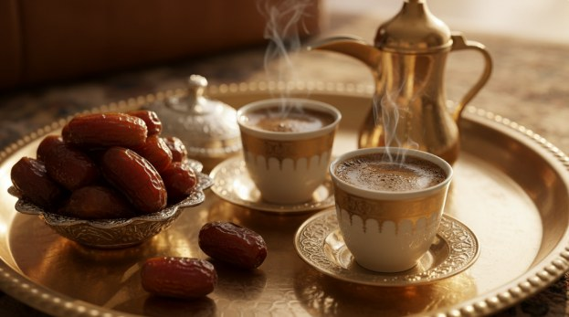

{{ p.t }}{{ p.place }}{{ p.d }}
{{ c.L.intro }}
{{ c.intro }}
{{ c.L.why }}
{{ w.t }}{{ w.d }}
{{ c.L.giga }}
{{ g.t }}{{ g.d }}
{{ c.L.culture }}
{{ c.culture }}

{{ c.L.poi }}
{{ c.L.itin }}
- {{ s.n }}{{ s.t }}
{{ c.intro }}
{{ c.culture }}
